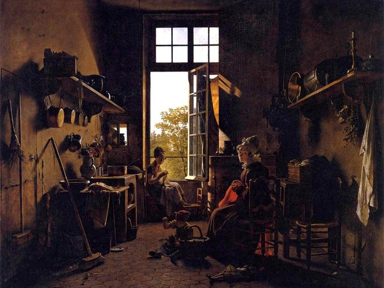
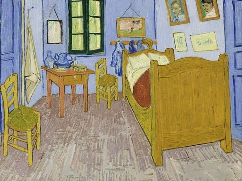
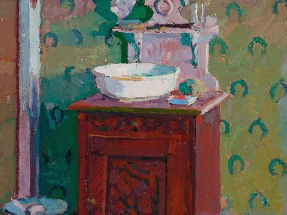
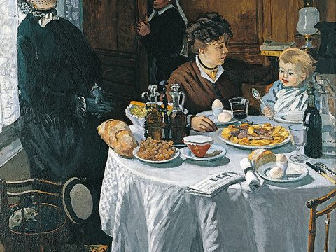
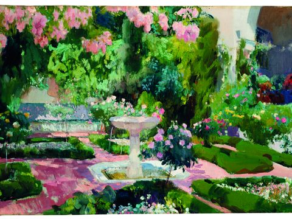
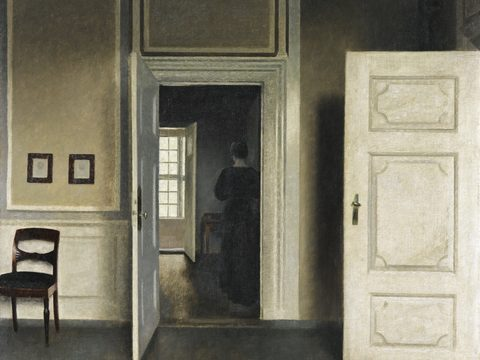
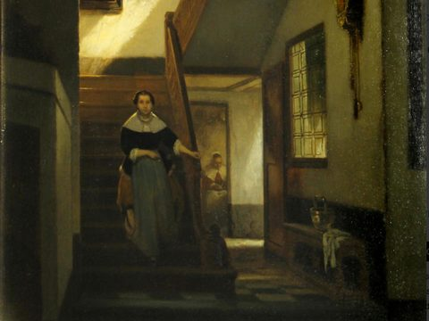
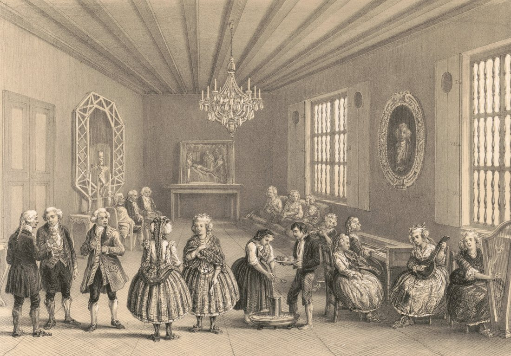

Optima Academy OnlineAn Education Experience Company
Spanish 1 ❖ Módulo 2 · La casa
Lesson 2.01 · Day 1 of 8
¿Cómo es tu casa?
The Rooms of a Home · about 50 minutes
El cuadro del módulo: Claudio Gay, Una tertulia en 1790 (Santiago) (An evening gathering in 1790), lithograph, Paris, 1854
Quarter / ModuleQ3 · Módulo 2La casa
LessonLesson 2.01 · Day 1 of 8
TopicLos cuartos (rooms)
Module ThemeHome & Chores
TODAY'S FOCUS
Welcome to Módulo 2. Our big question all module long: ¿Cómo es mi casa, y qué hago en ella? — What is my home like, and what do I do there?
Today we start with the easy half: the rooms of a house. You'll learn eight everyday spaces — kitchen, bedroom, bathroom, and more — each with its article (la, el). There is no new grammar today on purpose: we're stocking up on words so that tomorrow, when the action verbs arrive, you already have places to put them. Then you'll open the interactive map and explore the Cono Sur — Chile and its neighbors, where this module's reading takes you.
BY THE END OF THIS LESSON YOU WILL BE ABLE TO…
1
I will be able to name the main rooms of a house in Spanish.
2
I will be able to use the correct article (la / el) with each room.
3
I will be able to locate Chile and the Southern Cone countries on the map and name their capitals.
IPARA EMPEZAR6 min
Walk through your home in your head
Before any Spanish, picture your home. Where do you sleep? Where does your family eat? Is there an outdoor space? In this module you'll be able to name all of it — and say what you do in each place. Let's begin with the space you're in right now.
💭 QUICK CHECK-IN · no wrong answer
Which room of your home are you in as you do this lesson?
IILOS CUARTOS DE LA CASA14 min
Listen, then repeat
Click the 🔊 and say each room back out loud. Notice the article in front (la, el) — that's the grammatical gender from Semester 1. Learn each room with its article.

la cocinakitchen

el dormitoriobedroom

el bañobathroom
la salaliving room

el comedordining room

el jardíngarden / yard

la habitaciónroom / bedroom

la escalerastaircase / stairs
Note: el dormitorio and la habitación both mean a bedroom — you'll hear both across Latin America. La sala is the living room (some Chileans also say el living, borrowed from English).
⭐ PARA IR MÁS LEJOS · optional · +6 min
Look up from your screen and take a slow tour of your home. Point at each space and name it in Spanish: la cocina, el baño, la sala… Say it out loud, even in fragments. Naming what you can see is the fastest way to make a word stick.
❖En el cuadro · In the painting2 min
¿Qué cuarto es?
This is Claudio Gay’s picture of a home in Santiago de Chile in 1790, the picture at the top of this lesson. Guests are talking, a girl is serving from a tray, and musicians are playing. Which room of the house from Part II is it?

Es …
One more look: find five musical instruments. (click for a hint)
On the right: a flute, a keyboard, a violin, a small round-backed instrument like a guitar, and a harp. In colonial Santiago, an evening gathering like this, a tertulia, meant conversation, music and dancing in the family’s best room.
IIIA PRACTICAR12 min
Match the meaning
✅ TRY IT · which room fits?
You cook and prepare food in this room. It's:
✅ TRY IT · which room fits?
Your family sits down together to eat dinner here. That's:
✅ TRY IT · which article?
Which is written correctly — with the right article?
Your turn: how would you say "the living room" in Spanish? Say it out loud, then reveal.
“the living room”
Accents are part of the word. Click in a box, then click a letter to add it.
la sala. Feminine, so la — keep the article glued to the noun as you learn it.
🌎 CULTURA · CHILE
Bienvenido a Chile
This module our featured country is Chile, a long, narrow country running down the Pacific side of South America, with the capital Santiago tucked against the snow-capped cordillera de los Andes (the Andes mountain range). In many Chilean homes the cocina and the comedor are where the family gathers — especially for la once, an afternoon tea with bread, cheese, and tea or coffee. We'll visit Chilean homes and culture all module long.
IVEL MAPA DEL MUNDO HISPANO14 min
Explore the Southern Cone
Open the interactive map in a new tab. Switch it to Explorador mode and click on the Spanish-speaking countries of the Cono Sur: Chile, Argentina, Uruguay, and Paraguay. Read each country card — note the capital, then try the map's built-in quiz to see how many capitals you can place. It's ungraded; go as many rounds as you like.
Opens in a new tab · use Explorador mode, then the quiz
As you click, describe what you see with what you own: Santiago está en Chile (location), y es la capital (identity) — your Semester-1 ser/estar still at work.
✅ ON THE MAP · match the capital
Which city is the capital of Chile?
✅ ON THE MAP · match the capital
And the capital of Argentina is…
Before you check the map: what natural border separates Chile from Argentina? Say it, then reveal.
The natural border between Chile and Argentina
Accents are part of the word. Click in a box, then click a letter to add it.
La cordillera de los Andes. The Andes run the length of the border — the same snow-capped cordillera that rises right behind Santiago.
🌎 CULTURA · EL CONO SUR
Cuatro países, una región
The Cono Sur gathers Chile (Santiago), Argentina (Buenos Aires), Uruguay (Montevideo), and Paraguay (Asunción). Across the region people share the mate tea habit, a love of asado (barbecue), and, in the far south, the vast wilderness of Patagonia. Remember the seasons are flipped: while the northern hemisphere has summer, the Cono Sur is in winter.
WHAT YOU'LL DO NEXT
2
Continue to Lesson 2.02
Tomorrow you learn furniture and chore words (bed, table, to clean, to tidy up…) and meet the module's new grammar: stem-changing verbs like querer (to want) and poder (to be able to). This module's graded work is assigned in Canvas when the module starts; you should complete it while Módulo 2 is open. This first week of Módulo 2 is for building the habit.
✅ BEFORE YOU LEAVE
Click “Mark as Done” on this page in Canvas so your progress is recorded. Then name three rooms out loud in Spanish — the one you're in now, one where you eat, and one where you sleep.
¡BUEN COMIENZO! (Great start!)
You have the rooms. Tomorrow you fill them with furniture and start saying what you do there — ¡hasta mañana! (See you tomorrow!)
 Optima Academy OnlineAn Education Experience Company
Optima Academy OnlineAn Education Experience Company